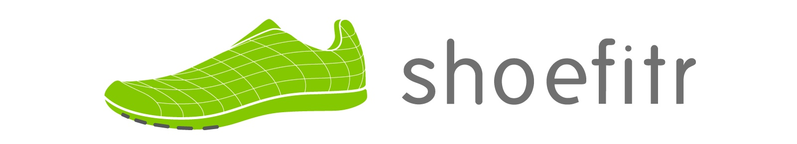
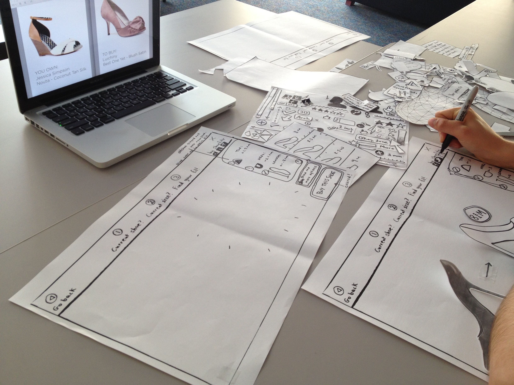
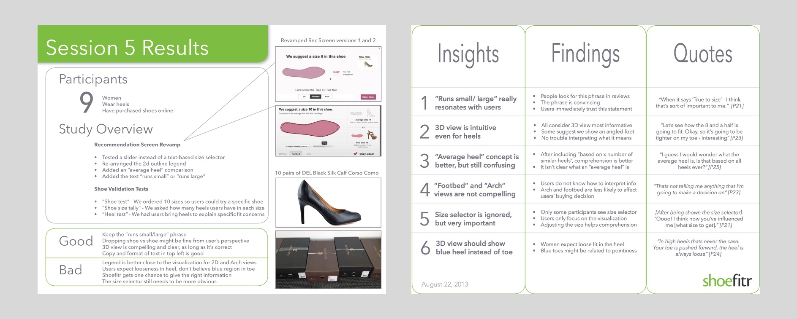
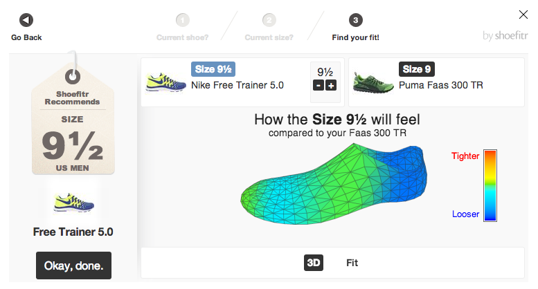
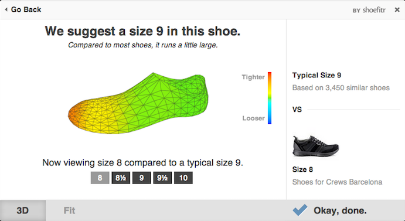
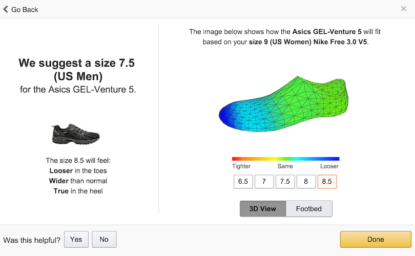

ABOUT SHOEFITR
I was a user research intern at Shoefitr for four months in 2013. Shoefitr focused on making it easier for shoppers to identify the right shoe size when shopping online. The company created 3D scans of nearly every available shoe, and used that data to compare a customer’s typical shoe size with the measurements for the shoe they wanted to buy.

MY ROLE
I was responsible for managing research end-to-end. That meant setting a schedule, creating a screener, contacting participants, preparing any research materials, taking notes, reviewing results, and delivering findings to the rest of the team.
I worked with my mentor to organize a total of six separate studies during my internship. For each one, we identified a specific research question and a preferred research method to answer that question. Methods that I used included think-aloud testing, participatory design, interviews, guerrilla research, and surveys.
Participatory Design Session Exploring Women’s Heels
Session 5 Research Findings (August, 2013)
After each study, I presented findings from my research to the team in the form of a two-page, bi-weekly research summary. I also produced a two-minute “highlights reel” at the end of each study to communicate the key themes from the interviews.
In four months, I ran a total of 35 user tests and combed through hours of video recordings to better understand how shoppers behave when purchasing shoes online.
SHOE RECOMMENDATION DESIGNS
A few of my studies focused on how to improve the design of the existing “size recommendation” tool. Through my research, I learned that many users didn’t notice the size recommendation tag on the left, or the small black plus and minus controls to change the size of the model shoe (which shows how the shoe would feel in different sizes). Users also really wanted to know if the shoe generally ran large or small.
Below are three versions of the final screen — the original, the redesign, and a more recent version used by Amazon.
Original Size Recommendation Screen (May, 2013)
Redesigned Screen (August, 2013)
Amazon Version (as of December, 2015)
REFLECTIONS
I had a great experience learning to moderate different user research methods. Thanks to expert guidance from my mentor, I learned how to think about research questions before choosing a method.
I learned to write a screener, recruit participants, run a usability testing session, conduct guerilla-style research, create a survey, and guide a participatory design session. I also got a chance to practice compiling research reports and video highlights reels. Best of all, I got a chance to see how various people think while interacting with software.